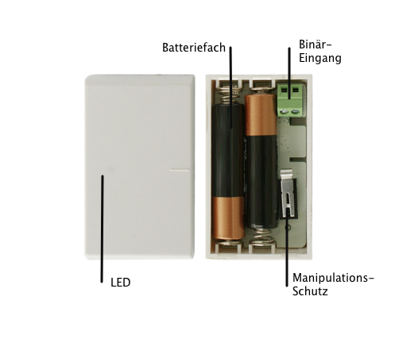

ZME_ITEMP
Firmware Version : 1.0 |
 |
KurzinfoS Dieses Gerät ist ein Funksensor. Ein Dreifachklick auf den internen Schalter innerhalb 1.5 Sekunden inkludiert und exkludiert das Gerät. Ein Einfachklick auf den internen Schalter weckt das Gerät auf. Ein Doppelklick bestätigt eine netzweite Inklusion. Weitergehende Informationen finden sich in den jeweiligen Abschnitten dieses Handbuches. |
Produktbeschreibung
iTEMP ist eine Kombination aus Temperatursensor, Digitalsensor mit externem Schaltkontakt sowie einem Thermostat, der anhand einer per Funk eingestellten Temperatur und der gemessenen Temperatur eine Heizung oder ein Kühlelement steuern kann. Die Funktionen können einzeln oder auch parallel genutzt werden. Das Gerät ist batteriebetrieben und kann an jeder flachen Wand mit Schrauben oder Kleber befestigt werden. Der Temperatursensor ist mit +/- 0.2 K recht genau, reagiert jedoch aufgrund des Plastegehäuses nur träge.
Installationsanleitung
Das Gerät kann an mittels Schrauben oder doppelseitigem Klebeband an jede flache Oberfläche montiert oder schlicht irgendwo abgelegt werden. Um die Batterien einzulegen muss das Gehuäuse mit einem spitzen flachen Gegensatz (Schraubendreher) aufgehebelt werden. Bitte beachten Sie die Polung der Batterien und verwenden Sie immer zwei gleiche Batterien. Beim Schließen des Deckels ist zu beachten, daß die Aussparung im Deckel genau auf der Seite der Anschlussklemmen für den externen Schalter positioniert sind. Ansonsten klemmt der Plastedeckel.
Achtung: Bei falschem Einsetzen der Batterien kann das Gerät zerstört werden.
Verhalten des Gerätes im Z-Wave Netz
I Im Auslieferungszustand ist das Gerät mit keinem Z-Wave-Netz verbunden. Damit es mit anderen Z-Wave Geräten kommunizieren kann, muss es in ein bestehendes Z-Wave Netz eingebunden werden. Dieser Prozess wird bei Z-Wave Inklusion genannt. Geräte können Netzwerke auch wieder verlassen. Dieser Prozess heißt bei Z-Wave Exklusion. Beide Prozesse werden von einem Controller gestartet, der dazu in einen Inklusion- bzw. Exklusion-Modus geschaltet werden muss. Das Handbuch des Controllers enthält Informationen, wie er in diese Modi zu schalten ist. Erst wenn der Controller des Z-Wave Netzes im Inclusion-Modus ist, können Geräte hinzugefügt werden. Das Verlassen des Netzes durch Exklusion führt zum Rücksetzen dieses Gerätes in den Auslieferungszustand.
Wenn Sich der Controller im Standard-Inklusion-Modus befindet wird der Vorgang durch einen Dreifach-Klick auf den Internen Taster bestätigt. Ein Doppelklick bestätigt die Netzweite Inklusion. Die Exklusion wird ebenfalls durch einen Dreifachklick bestätigt.
Bedienung des Gerätes
Der Temperatursensor (Kommunikationsmuster 3) kann ohne zusätzliche Installationen oder Konfigurationen genutzt werden. Für den Digitalsensor befinden sich zwei Anschlussklemmen im Gehäuse, an die ein externer Schalter angeschlossen wird. Dieser Schalter muss stromlos sein! Beim Kurzschließen der Schaltklemmen wird ein Schaltsignal per Funk an assoziierte Geräte (Kommunikationsmuster 4) gesendet.
Das Gerät kann auch als funkgesteuerter Raumthermostat genutzt werden. In dieser Funktion ermittelt das Gerät die aktuelle Raumtemperatur, vergleicht diese mit einem per Funk eingestellten Sollwert und schaltet gegebenenfalls ein Gerät (Heizung, Kühlung) zwecks Regelung der Temperatur. Die Solltemperatur wird durch das Z-Wave Kommando (Command Class Temperature Setpoint) eingestellt und die Steuerung eines Aktors erfolgt nach Kommunikationsmuster 4. Mittels Konfigurationsparameter werden die unteren und oberen Schwellwerte der Solltemperatur und damit der Regelbereich eingestellt.
Kommunikation mit einem batteriebetriebenen Gerät
W Das Gerät ist batteriegespeist und damit in der Regel in einem Tiefschlafmodus um Strom zu sparen. Im Tiefschlafmodus kann das Gerät keine Funksignale empfangen. Daher wird ein (statischer) Controller benötigt, der netzgespeist und damit immer funkaktiv ist. Dieser Controller - zum Beispiel ein IP-Gateway - verwaltet eine Nachrichten-Mailbox für dieses batteriegespeiste Gerät, in dem Nachrichten an dieses Gerät zwischengespeichert werden. Ohne einen solchen statischen Controller wird die Nutzung dieses batteriebetriebenen Gerätes sehr schnell zur Entladung der Batterie führen oder die Nutzung ist komplett unmöglich.
Dieses Gerät weckt regelmäßig auf, meldet dies durch Aussenden einer sogenannten Wakeup-Notifikation und leert dann seine Mailbox im statischen Controller. Dafür muss bei der Inclusion die Node-ID des Controllers und ein Aufweckinterval definiert werden. Erfolgt die Inklusion durch einen statischen Controller wie zum Beispiel ein IP-Gateway, wird dieser Controller diese Konfiguration automatisch erledigen und in der Regel eine Nutzerschnittstelle anbieten, um das Aufweckinterval den Nutzerbedürfnissen anzupassen. Das Aufweckinterval ist ein Kompromiss zwischen maximaler Batterielaufzeit und minimaler Reaktionszeit des batteriegespeisten Gerätes.
iTEMP bleibt nach der Inklusion ca. 2.5 Sekunden wach, damit der Controller Konfigurationsaufgaben durchführen kann. Das Gerät kann mit der internen Taste aufgeweckt werden. Als Aufweckinterval kann ein Wert zwischen 4 Minuten und 180 Tagen mit einer Auflösung von 4 Minuten gewählt werden.
Es ist möglich die Gerätenummer 255 als Zielgerät für die Wakeup-Notifikation anzugeben. In diesem Falle wird die Nachricht als Broadcast an alle Geräte mit direkter Funkverbindung gesendet. Dem Vorteil der sofortigen Benachrichtigung steht als Nachteil gegenüber, das das Gerät gegebenenfalls mehr Zeit im aktiven Modus und damit mehr Batterieladekapazität verbraucht.
Node Information Frame
NIF Der Node Information Frame ist die Visitenkarte eines Z-Wave Gerätes. Es ist ein spezielles Datenpaket, in dem der Gerätetyp sowie die Funktionen des Gerätes bekanntgemacht werden. Inklusion und Exklusion eines Gerätes wird von diesem mit einem Node Information Frame beantwortet. Zusätzlich kann der Node Information Frame für bestimmte Konfigurationsprozesse des Z-Wave Netzes - zum Beispiel das Setzen von Assoziationen - benötigt werden.
Ein einfacher Druck auf den internen Schalter sendet einen Node Information Frame.
Assoziationen - wie werden andere Geräte gesteuert?
A Z-Wave Geräte können andere Geräte direkt steuern. Diese direkte Steuerung heißt in Z-Wave Assoziation. In den steuernden Geräten muss dazu die Geräte-ID des zu steuernden Gerätes hinterlegt werden. Dies erfolgt in sogenannten Assoziationsgruppen. Eine Assoziationsgruppe ist immer an ein Ereignis im steuernden Gerät gebunden (Tastendruck oder Auslösen eines Sensors). Bei Eintritt dieses Ereignisses wird an alle in einer Assoziationsgruppe hinterlegten Geräte ein Steuerkommando gesendet.
Assoziationsgruppen:
| 1 | empfangen Schaltkommando bei Erreichen der oberen Temperaturschranke (max. Anzahl Geräte: 5) |
| 2 | empfangen Schaltkommando bei Erreichen der unteren Temperaturschranke (max. Anzahl Geräte: 5) |
| 3 | Geräte, die durch den externen Binär-Schalteingang gesteuert werden (max. Anzahl Geräte: 5) |
| 4 | Geräte, die vom Termostat gesteuert werden (max. Anzahl Geräte: 5) |
| 5 | ?? Geräte, die über Änderungen der Thermostat-Zieltemperatur informiert werden (max. Anzahl Geräte: 5) |
Konfigurationseinstellungen
Z-Wave Produkte können direkt nach der Inklusion im Netz verwendet werden. Durch Konfigurationseinstellungen kann das Verhalten des Gerätes jedoch noch besser an die Anforderungen der Anwendung angepasst und zusätzliche Funktionen aktiviert werden.
WICHTIG: Manche Steuerungen erlauben nur die Konfiguration von vorzeichenbehafteten Werten zwischen -128 und 127. Um erforderliche Werte zwischen 128 und 255 zu programmieren, muss der gewünschte Wert minus 256 eingegeben werden. Beispiel: um einen Parameter auf einen Wert von 200 zu setzen, müsste der Wert 200-256 = -56 eingegeben werden, wenn nur positive Werte bis 128 akzeptiert werden. Bei Werten von 2 Byte Länge wird die gleiche Logik angewandt: Werte über 32768 werden als negative Werte angegeben
| Wert | Beschreibung |
|---|---|
| 65136 — 65535 | in 0.1 C |
| 0 — 500 | in 0.1 C (Voreingestellt 0) |
| Wert | Beschreibung |
|---|---|
| 65136 — 65535 | in 0.1 C |
| 0 — 500 | in 0.1 C (Voreingestellt 400) |
| Wert | Beschreibung |
|---|---|
| 0 | BASIC ON wenn verbunden, BASIC OFF, wenn nicht verbunden (Voreingestellt) |
| 255 | BASIC OFF wenn verbunden, BASIC ON, wenn nicht verbunden |
| Wert | Beschreibung |
|---|---|
| 0 | 'AN', wenn gemessener Wert größer als definierter Schwellwert, ansonsten 'AUS' (Voreingestellt) |
| 255 | 'AUS', wenn gemessener Wert größer als definierter Schwellwert, ansonsten 'AN' |
| Wert | Beschreibung |
|---|---|
| 0 | 'AUS', wenn gemessener Wert größer als definierter Schwellwert, ansonsten 'AN' (Voreingestellt) |
| 255 | 'AN', wenn gemessener Wert größer als definierter Schwellwert, ansonsten 'AUS' |
| Wert | Beschreibung |
|---|---|
| 0 | Inaktiv |
| 255 | Aktiv (Voreingestellt) |
| Wert | Beschreibung |
|---|---|
| 0 | Aus |
| 255 | Ein (Voreingestellt) |
| Wert | Beschreibung |
|---|---|
| 0 | Aus |
| 255 | Ein (Voreingestellt) |
| Wert | Beschreibung |
|---|---|
| 0 | Nein |
| 255 | Ja (Voreingestellt) |
| Wert | Beschreibung |
|---|---|
| 5 — 50 | in 0.1 C Schritten (Voreingestellt 10) |
| Wert | Beschreibung |
|---|---|
| 5 — 50 | in 0.1 C Schritten (Voreingestellt 10) |
| Wert | Beschreibung |
|---|---|
| 0 | sende nur einmal (Voreingestellt) |
| 1 — 255 | ?? jede Menute |
| Wert | Beschreibung |
|---|---|
| 0 | Nein (Voreingestellt) |
| 1 | an Gerät das Wakeup Info empfängt |
| 2 | an alle Geräte |
Technische Daten
| Schutzklasse | IP 20 |
| Batterietyp | 2 * AAA |
| Z-Wave Frequenz | 868.42 MHz (SRD Band) |
| Funkreichweite | bis zu 100 m im Freien, im Durchschnitt bis zu 20 m in Gebäuden |
| Explorer Frames | Ja |
| SDK | 4.54 pl1 |
| Geräteart | Slave with routing capabilities |
| Allgemeiner Z-Wave-Gerätetyp | Multilevel Sensor |
| Spezieller Z-Wave-Gerätetyp | Routing Multilevel Sensor |
| Router | Nein |
| FLiRS | Nein |
| Firmware Version | 1.0 |